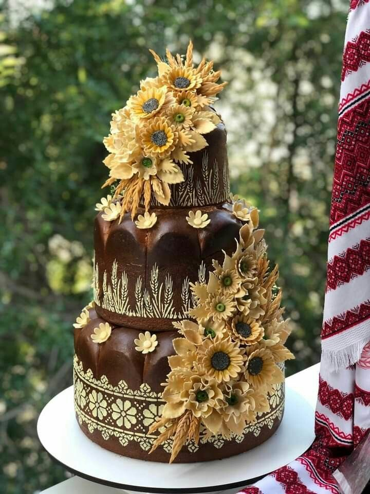
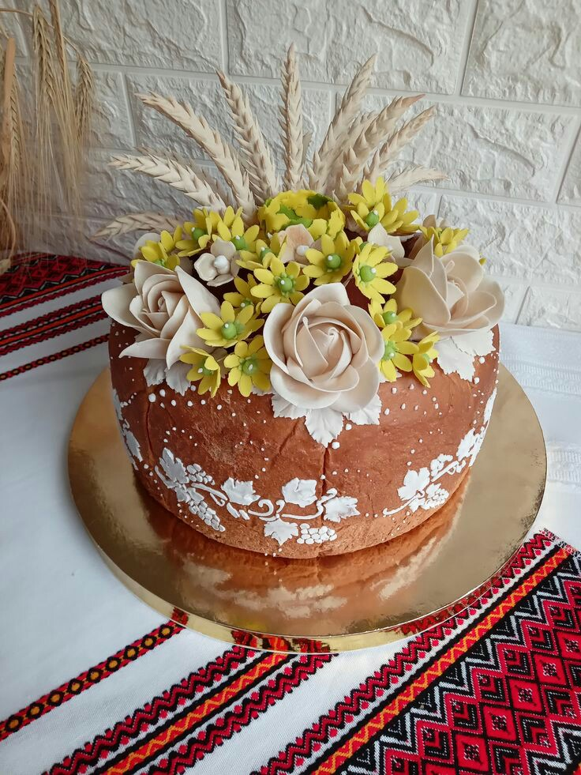
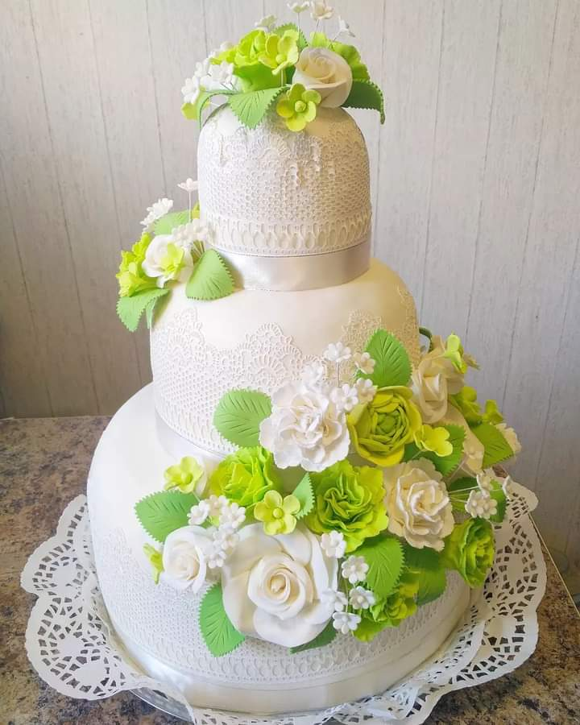

Тістовий декор №1

Тістовий декор №2

Мастичний декор №1

Мастичний декор №2
Символіка та традиції
Коровай — це не просто хліб, а символ родинного щастя. Кожен елемент декору має значення:
- Пара лебедів — вірність у сім'ї.
- Колоски пшениці — побажання достатку та родючості.
- Грона винограду — символ добробуту.
Ми пропонуємо два основні варіанти оформлення:
- Тістове оздоблення: класичний український стиль, декор випікається разом із короваєм.
- Мастичне оздоблення: сучасний європейський підхід, що дозволяє створювати яскраві квіти та фігурки.